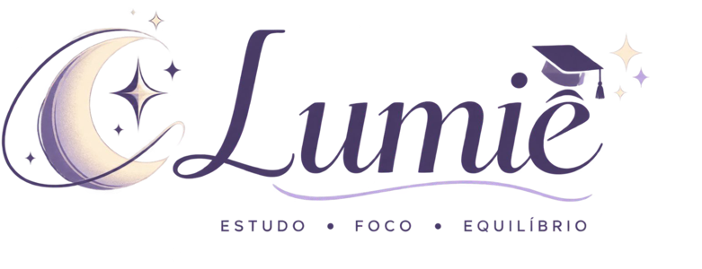
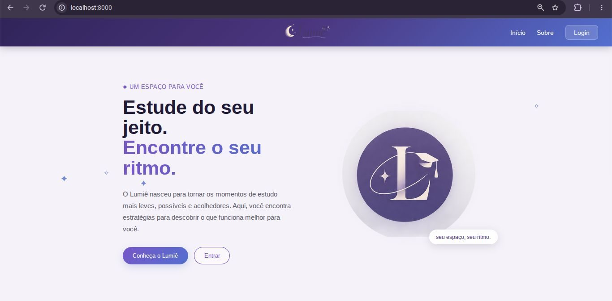

Lumiê
Estude do seu jeito. Encontre o seu ritmo.
Plataforma web que ajuda estudantes de graduação a estudar com foco, dividindo tarefas grandes em missões pequenas.
O Lumiê oferece um modo de foco para estudar sem distrações e mostra o progresso de cada missão. O projeto nasceu de uma pesquisa com estudantes de Psicologia e se apoia em estudos sobre autorregulação e motivação. O público inicial é esse grupo, e o protótipo será validado com estudantes do Centro Universitário UniBrasil.

O problema
A vida universitária exige autonomia, prazos rígidos e a assimilação de muito conteúdo. Muitos estudantes têm dificuldade de começar uma atividade, manter o foco, criar uma rotina de estudo e permanecer em uma sessão sem interrupções.
O projeto começa pelos estudantes de graduação em Psicologia, que são o público-alvo inicial.
Quem é afetado, em que contexto e por que importa
Estudantes de graduação, principalmente nos primeiros períodos, quando a rotina passa a depender de autonomia. A dificuldade aparece no estudo individual, fora da sala de aula. Vale buscar uma solução porque a literatura liga a autorregulação ao rendimento acadêmico, e porque o estudante que não consegue começar ou manter o foco tende a acumular atraso e desmotivação.
O que a literatura aponta
Revisões sobre estratégias de aprendizagem no ensino superior associam o rendimento acadêmico à capacidade de se autorregular: organizar o estudo, usar estratégias cognitivas e refletir sobre o próprio aprendizado. Na motivação, a literatura destaca autonomia, competência, pertencimento e valor da tarefa.
O que encontramos em campo
Questionário exploratório com 9 estudantes. A amostra é pequena e serve como diagnóstico inicial, não como conclusão estatística.
Outras médias (escala de 1 a 5): frequência de interrupção antes de concluir, 4,00; dificuldade autodeclarada para focar, 3,11.
Fontes
- Estratégias de estudo e de aprendizagem de estudantes de Ensino Superior (2023).
- Motivação para o aprendizado em estudantes de graduação em Psicologia (2014).
- Promoção de estratégias de aprendizagem em estudantes de Psicologia (2020).
- TODO: complete autores, periódico e link de cada referência.
A solução
Objetivo geral: promover estratégias de aprendizagem, autorregulação e motivação no ensino superior por meio de uma plataforma interativa.
A pergunta que guia o produto é “Qual é a minha próxima missão?”. Cada tarefa complexa vira etapas menores, viáveis e mensuráveis, o que reforça a sensação de competência do estudante.
Objetivos específicos
- Permitir que o estudante divida um objetivo grande em missões pequenas.
- Oferecer um modo de foco para executar uma etapa sem distrações.
- Tornar o avanço visível por meio de indicadores de progresso.
- Abrir espaço para autorreflexão sobre o aprendizado.
Público-alvo
Estudantes de graduação com dificuldade de foco, de rotina ou de motivação. A primeira turma de validação é a de Psicologia.
Como o estudante usa
- EscolherSeleciona com clareza o objetivo.
- FocarFaz a sessão sem distrações.
- ConcluirFinaliza o bloco.
- AvançarRecebe feedback e vê a evolução.
Funcionalidades e estado atual
Estados possíveis: Planejada, Em desenvolvimento e Implementada. Confira cada rótulo com o que o código realmente faz hoje.
Missões Em desenvolvimento
Divide o conteúdo em etapas focadas.
Modo Foco Em desenvolvimento
Ambiente para executar a tarefa sem distrações.
Progresso Visual Em desenvolvimento
Mostra em gráfico o que foi concluído e o que falta.
Feedback Contínuo Planejada
Espaço para autorreflexão sobre o aprendizado.
Login e dados na nuvem Planejada
Perfis, missões e progresso guardados no Cloud Firestore.
Limitações conhecidas
- O público inicial é restrito a estudantes de Psicologia.
- A amostra do diagnóstico tem 9 pessoas.
- Os testes piloto com estudantes ainda não foram realizados.
Demonstração
O protótipo funcional já tem a página inicial e a navegação. As demais telas estão sendo construídas.

Para abrir o protótipo, use o botão Abrir o protótipo no topo da página. TODO: adicione prints do Modo Foco e das Missões e, se possível, um vídeo curto de um fluxo completo.
Documentação
Os documentos ficam no repositório, ao lado desta página. Troque cada “em breve” por um link quando o arquivo existir.
| Documento | O que contém | Link |
|---|---|---|
| Requisitos | Escopo, requisitos funcionais e não funcionais | requisitos.md |
| Arquitetura | Diagrama da arquitetura e justificativas técnicas | arquitetura.md |
| Modelo de dados | Coleções do Firestore: usuários, missões, progresso | modelo-de-dados.md |
| Gestão e evolução | Cronograma, decisões, limitações e problemas encontrados | gestao-evolucao.md |
| Instalação | Como executar o projeto localmente | instalacao.md |
Tecnologias
| Tecnologia | Finalidade | Situação |
|---|---|---|
| HTML5 | Estrutura semântica das páginas | Em uso |
| CSS3 | Estilo e design responsivo | Em uso |
| JavaScript | Lógica e interatividade no navegador | Em uso |
| Firebase (Authentication e Cloud Firestore) | Login, missões e progresso na nuvem | Prevista |
| Git e GitHub | Versionamento e hospedagem do código | Em uso |
| GitHub Pages | Publicação do site estático do projeto | Em uso |
Evolução e próximos passos
- Finalizar o protótipoTelas, navegação e fluxos principais.
- Implementar o banco de dadosCloud Firestore para autenticação, missões e progresso.
- Aplicar testes pilotoSessões práticas com estudantes de Psicologia.
- Analisar o feedbackReunir oportunidades de melhoria.
- Evoluir a plataformaAjustar funcionalidades e publicar nova versão.
Resultados até agora
- Diagnóstico exploratório com 9 estudantes concluído.
- Fundamentação teórica e pilares do projeto definidos: Modo Foco, Progresso Visual e Gestão de Missões.
- Protótipo com página inicial e navegação funcionando.
- TODO: liste o que mais já funciona no protótipo e os problemas encontrados no caminho, com a forma como foram tratados.
Ação de extensão
O projeto tem uma parceria inicial com estudantes de Psicologia do Centro Universitário UniBrasil. O ciclo é apresentar a proposta, deixar os estudantes experimentarem, ouvir percepções e barreiras, e então aprimorar a plataforma. Os resultados serão publicados aqui depois dos testes.
Equipe
Aline Isabeli Stofela
TODO: descreva suas responsabilidades reais (pesquisa, design, programação etc.).
TODO: se houver orientador ou outros integrantes, inclua cada um com sua contribuição e com autorização para publicar nome e foto.